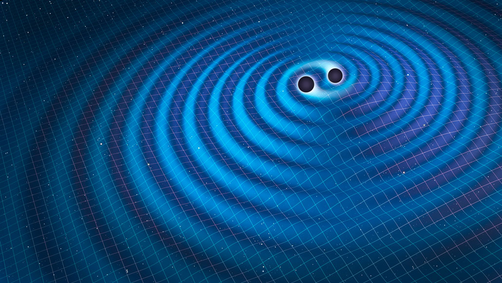

PLACES MUST VISIT
bhachao
ihad visited 2021
Bhachau is a city and a municipality in Kutch district in the state of Gujarat, India. Bhachau was one of many devastated towns in the Kutch region of the Indian state of Gujarat, during the 1956 Anjar earthquake as well as in the 2001 Gujarat earthquake.
bhachao
ihad visited 2021
Bhachau is a city and a municipality in Kutch district in the state of Gujarat, India. Bhachau was one of many devastated towns in the Kutch region of the Indian state of Gujarat, during the 1956 Anjar earthquake as well as in the 2001 Gujarat earthquake.
bhachao
ihad visited 2021
Bhachau is a city and a municipality in Kutch district in the state of Gujarat, India. Bhachau was one of many devastated towns in the Kutch region of the Indian state of Gujarat, during the 1956 Anjar earthquake as well as in the 2001 Gujarat earthquake.
review on movies

Excellent film to culminate MCU ride
Seventeen-year-old Rose hails from an aristocratic family and is set to be married. When she boards the Titanic, she meets Jack Dawson, an artist, and falls in love with him.
news about environment
-
A bounty of potential gravitational wave events hints at exciting possibilities
By loosening the criteria for what qualifies as evidence for gravitational waves, physicists identified 1,201 possible tremors. Most are probably fakes, spurious jitters in the data that can mimic the cosmic vibrations, the team reports August 2 at arXiv.org. But by allowing in more false alarms, the new tally may also include some weak but genuine signals that would otherwise be missed, potentially revealing exciting new information about the sources of gravitational waves.
-
A bounty of potential gravitational wave events hints at exciting possibilities
By loosening the criteria for what qualifies as evidence for gravitational waves, physicists identified 1,201 possible tremors. Most are probably fakes, spurious jitters in the data that can mimic the cosmic vibrations, the team reports August 2 at arXiv.org. But by allowing in more false alarms, the new tally may also include some weak but genuine signals that would otherwise be missed, potentially revealing exciting new information about the sources of gravitational waves.
BOOKS
Bill Gates
Reading is still the main way that I both learn new things and test my understanding.
LIST OF BOOKS
PHYSICS